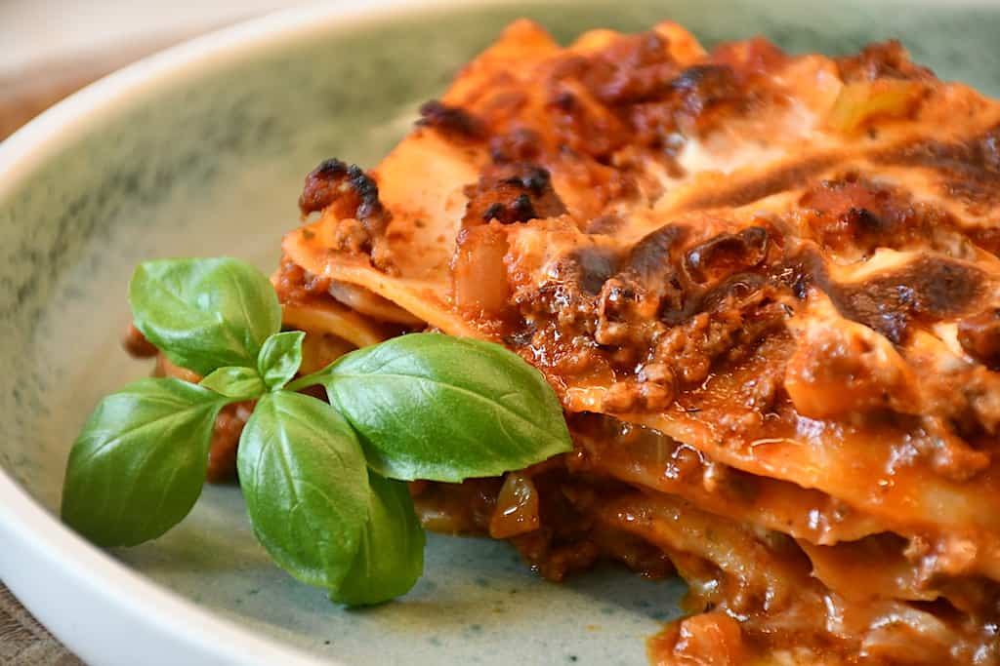

Lasagne

Create our delicious and easy to follow recipe for Classic Lasagna made extra special with Knorr Beef Cubes. Enjoy it with your family!
List of Ingredients
- 1 pack lasagna noodles
- Sauce:
- 4 tbsp canola oil
- 1 pc. onion, chopped
- Ground beef
- Tomato Sauce
- Knorr Beef stock
- bay leaves
- dried oregano
- For toppings:
- grated mozzarella
How to cook
- Begin by cooking the lasagna noodles according to package directions then set this aside.
- To make the sauce, get a pan and make it nice and hot over medium high heat. Pour some oil and throw in the onions and garlic. Add the ground beef next and just cook until the color turns light brown.
- Pour in the tomato sauce, Knorr Beef Cube and banana ketchup. Mix this well before adding the pepper, bay leaves and oregano. Now continue to simmer for 15-20 minutes or until the beef is tender and sauce has thickened.
- Slowly whisk in the milk into the pan and season with nutmeg. Continue to cook until slightly thickened into a gravy-like consistency. If sauce has thickened too much, add more milk or water.
- Now here comes the exciting part. Layer the lasagna noodles in a rectangular baking dish. Pour the meat sauce over the pasta while alternating it with the white sauce. Sprinkle some grated cheese over the white sauce and that's it. Just repeat the layering until the noodles have been used up and the dish is full.
- Pop this in the preheated oven, bake for 15-20 minutes or until cheese melts before you can devour this gorgeous piece of heaven in a dish.